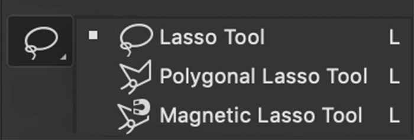
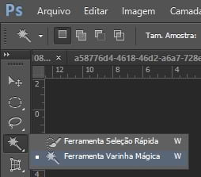
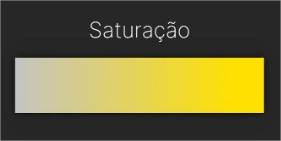
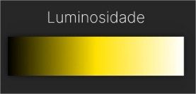

Olá, eu sou o Gabriel
Aula sobre recortes e Introdução aos conceitos de ajuste de cores no Photoshop.
Ferramenta de Laço
Uma das ferramentas mais versáteis para recortar partes específicas de uma imagem.

Ferramenta de Varinha Mágica
Ideal para selecionar áreas com cores semelhantes.

Dicas para Recortar com Precisão
- Utilize zoom para maior precisão.
- Ajuste a opacidade da seleção para melhor visualização.
- Utilize as ferramentas de refinamento para melhorar os detalhes.
Saturação
Ajuste que controla a intensidade das cores em uma imagem.
Permite tornar as cores mais vibrantes ou desbotadas.
Luminosidade
Ajuste que controla o brilho geral da imagem.
Importante para ajustar o contraste e a visibilidade das áreas.
Chega de enrolação, vamos pra Aula
Abram o Photoshop
Saturação e Luminosidade no Photoshop
Passo a passo para ajustar a saturação e luminosidade de uma imagem no Photoshop:
- Abra a imagem no Photoshop.
- Selecione a camada desejada.
- Na guia "Imagem", vá para "Ajustes" e escolha "Saturação" ou "Luminosidade/Contraste".
- Use as configurações deslizantes para ajustar a saturação ou luminosidade conforme necessário.
- Clique em "OK" para aplicar as alterações.